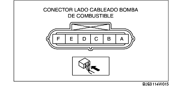

CONTROL CONJUNTO BOMBA DE COMBUSTIBLE (ZJ, Z6, LF)
B3E011413350W03
Control funcionamiento bomba de combustible
1. Conectar el WDS o instrumento equivalente al DLC-2.
2. Quitar el tapón del tubo de llenado.
3. Poner el conmutador de arranque en posición ON.
4. Con la función de simulación 'FP', comprobar que se oiga el ruido de funcionamiento de la bomba de combustible cuando "FP" cambia de OFF a ON.
-
• Si el ruido de funcionamiento no se puede comprobar, medir la tensión en el terminal A del conector lado cableado de la bomba de combustible.

-
- Si no está conforme a lo especificado, controlar lo siguiente:
-
• Continuidad bomba de combustible
-
- Si no está conforme a lo especificado, controlar lo siguiente:
-
• Relé bomba de combustible
-
• Cableado y conector entre relé principal-relé bomba de combustible-bomba de combustible
-
Estándar
-
B+ (conmutador de arranque en posición ON)
Control de la continuidad
1. Desconectar el cable negativo de la batería.
2. Desconectar el conector de la bomba de combustible.
3. Controlar la continuidad entre los terminales A-E de la bomba de combustible.
-
• Si hay continuidad, llevar a cabo el "Control circuitos abiertos/cortocircuitos".
-
• Si no hay continuidad, sustituir la bomba de combustible.
Control circuitos abiertos/cortocircuitos
1. Controlar por si hay circuito abierto o cortocircuito en los siguientes cableados (control continuidad).
Circuito abierto
-
• Si no hay continuidad, el circuito está abierto. Reparar o sustituir el cableado.
-
- Terminal A de la bomba de combustible y terminal D del relé bomba de combustible
-
- Terminal E de la bomba de combustible y masa carrocería
Cortocircuito
-
• Si hay continuidad, el circuito está en cortocircuito. Reparar o sustituir el cableado.
-
- Terminal A de la bomba de combustible y masa carrocería
-
- Terminal E de la bomba de combustible y alimentación
Control presión estática del combustible
-
Nota
-
• El control de la presión estática del combustible no puede efectuarse porque el regulador de presión está integrado en la bomba de combustible.